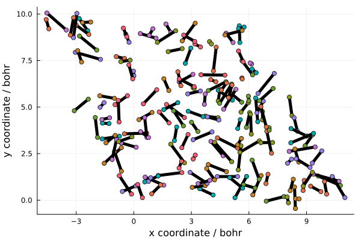

Semiclassical EBK quantisation
In surface science, it is often of interest to investigate how collisions with surfaces can perturb the quantum states of molecules. In particular, for diatomic molecules, the rotational and vibrational quantum numbers can undergo significant changes when the molecule impacts the surface.
Einstein-Brillouinn-Keller (EBK) quantisation allows for a semiclassical investigation into these phenomena by providing a link between the quantum numbers and classical positions and velocities. The quantisation procedure allows the user to generate a classical distribution with a given set of quantum numbers, then perform semiclassical dynamics and extract the quantum numbers at the end by reversing the procedure.
These three steps can be applied to give insight into the processes taking place during surface scattering and allow us to attempt to predict the experimentally observed change in the quantum numbers.
A detailed yet approachable description of the theory is given by [4] so we shall not delve into the theory here. Briefly, the procedure for a diatomic molecule involves an optimisation process to find the bounds of an integral, then computing the integral to obtain the vibrational quantum number. The rotational quantum number comes directly from the classical angular momentum of the molecule.
Configurations can be generated by randomly selecting bond lengths from the appropriate probability distribution and selecting a matching radial velocity.
Example
In this example we will create a quantised distribution suitable for use as initial conditions for hydrogen scattering simulations.
The simulation can be set up in the usual way, by specifying the atoms along with the model and the simulation cell.
using NQCDynamics
using Unitful, UnitfulAtomic
atoms = Atoms([:H, :H])
model = DiatomicHarmonic()
cell = PeriodicCell(austrip.([5.883 -2.942 0; 0 5.095 0; 0 0 20] .* u"Å"))
sim = Simulation(atoms, model; cell=cell)Simulation{Classical}:
Atoms{Float64}([:H, :H], [1, 1], [1837.4715941070515, 1837.4715941070515])
DiatomicHarmonic
r₀: Float64 1.0
The distribution is generated using the QuantisedDiatomic.generate_configurations function. We have to provide the desired vibrational ν and rotational J quantum numbers, along with the number of samples and some other options as keyword arguments. In addition to the rotational and vibrational energy we have applied a translational impulse of 1 eV and positioned the molecule at a height of 10 bohr.
using NQCDynamics.InitialConditions: QuantisedDiatomic
ν, J = 2, 0
nsamples = 150
configurations = QuantisedDiatomic.generate_configurations(sim, ν, J;
samples=nsamples, translational_energy=1u"eV", height=10)150-element Vector{Tuple{Matrix{Float64}, Matrix{Float64}}}:
([0.0011046519570984798 -0.0011046519570984798; -0.005283370838543365 0.005283370838543365; -0.005607303915528324 -0.0033369546439706577], [7.175200929938979 6.92875301616607; 2.52401539816603 3.7027357294708483; 9.873371237448197 10.126628762551803])
([0.0016018674351388226 -0.0016018674351388226; 0.0009017011081311105 -0.0009017011081311105; -0.0020390073091819043 -0.006905251250317077], [2.3636769378423685 3.078942718962687; 6.353234530012501 6.755862071653337; 9.456781238989288 10.543218761010712])
([0.00533861897436013 -0.00533861897436013; 0.002731230817256915 -0.002731230817256915; -0.004161421707351098 -0.004782836852147884], [1.5631305529175188 2.29204378929202; 4.8659337211236675 5.238844824885502; 9.97878862836525 10.02121137163475])
([-0.004829213569759492 0.004829213569759492; -0.002766656319890384 0.002766656319890384; -0.0009261249990296697 -0.008018133560469312], [0.9512190350336786 0.27072900527733934; 4.713999740119058 4.324147020985426; 9.750164232369691 10.249835767630309])
([0.0041270870780270325 -0.0041270870780270325; -0.0005508383085249549 0.0005508383085249549; -0.0034485747371931644 -0.0054956838223058175], [3.731702813977252 4.39385782855849; 4.515743196931587 4.427366009506792; 9.917889814263978 10.082110185736022])
([0.0015067906260741544 -0.0015067906260741544; 0.001796066368303896 -0.001796066368303896; 0.0010579283703000195 -0.010002186929799001], [-1.7545338546455689 -1.5488088713320174; 4.990610937840618 5.2358312871416; 9.622485367876378 10.377514632123622])
([0.0037599023256031797 -0.0037599023256031797; -0.00430050604060907 0.00430050604060907; -0.0020680823974720875 -0.006876176162026895], [1.8395628266337256 1.3264864723306966; 4.150439335844653 4.737286485024222; 10.164028145296909 9.835971854703091])
([-0.00033165081984225486 0.00033165081984225486; -0.0015636883881610644 0.0015636883881610644; -0.006660927043829705 -0.002283331515669277], [6.037627652518363 5.869812613421164; 4.69933194385151 3.9081069195325653; 10.55376492440105 9.44623507559895])
([0.00228783058244184 -0.00228783058244184; 7.70011360950899e-5 -7.70011360950899e-5; -0.005923284455703539 -0.0030209741037954428], [0.6713379943772214 -0.4863023781774386; 3.602105591942533 3.563143081099133; 9.632858343747406 10.367141656252594])
([-0.004359872257147522 0.004359872257147522; 0.0019439959203206374 -0.0019439959203206374; -0.0016926897086158338 -0.0072515688508831486], [1.5614417950278139 0.5907567707244581; 0.8050681971293864 1.2378808154506054; 9.690591809974181 10.309408190025819])
⋮
([0.000689703184219776 -0.000689703184219776; -0.0011813947111456835 0.0011813947111456835; -0.003959720662632145 -0.004984537896866837], [10.999746843164838 10.340462138655683; 0.1396273545093205 1.2689181579546622; 10.244904744137376 9.755095255862624])
([0.0008839315419782996 -0.0008839315419782996; 0.002502096632659233 -0.002502096632659233; -0.0001166393519622293 -0.008827619207536753], [2.358504145346305 2.4861717077410224; 1.7248739866177303 2.086255567427385; 9.685465018664878 10.314534981335122])
([1.897100966623273e-5 -1.897100966623273e-5; -0.0006885221930042662 0.0006885221930042662; -0.0009849904245954506 -0.007959268134903531], [7.053457533573283 7.056957244810839; 3.887925544524144 3.760909170669624; 9.678351883926766 10.321648116073234])
([-0.0005229810398674216 0.0005229810398674216; 0.0020316688093748943 -0.0020316688093748943; -0.0029984946969807296 -0.005945763862518253], [6.902852465991801 6.622316633489774; 3.9363443582119455 5.026165704222642; 9.604758802933265 10.395241197066735])
([-0.001324900282163392 0.001324900282163392; -0.002461469705075546 0.002461469705075546; -0.008726105498006627 -0.0002181530614923542], [0.8037319162605645 0.9952798268657908; 8.849626649602348 9.20549447254175; 9.692489967984251 10.307510032015749])
([-0.003924947310162799 0.003924947310162799; 0.001483688527698175 -0.001483688527698175; -0.008750157248201112 -0.00019410131129786977], [2.836209313198006 3.6101832307497905; 4.778051428731703 4.485477763032846; 9.578200443918664 10.421799556081336])
([-0.0007501586086556379 0.0007501586086556379; -0.0013152430059270434 0.0013152430059270434; -0.009148753934543275 0.00020449537504429321], [5.608722047373816 5.414000943154961; 3.314379378143084 2.972977483296862; 10.60696331835112 9.39303668164888])
([-0.0003088338987331988 0.0003088338987331988; 0.0014243077173760603 -0.0014243077173760603; -0.0020277917327680924 -0.00691646682673089], [7.987687055261357 8.0563063476476; 0.17196366889767767 -0.14450090350680567; 10.271551655299167 9.728448344700833])
([0.0026733631312453954 -0.0026733631312453954; -0.0007601928246086777 0.0007601928246086777; -0.0038605302834471 -0.005083728276051882], [3.836790255730258 4.430780381522793; 4.473251288942183 4.304345304477014; 9.932054916052685 10.067945083947315])The output contains both the positions and velocities, these can be passed directly to the DynamicalDistribution for use with dynamics. Here however, let's focus on the positions and visualise the distribution.
This collects the x and y coordinate for each atom:
r = last.(configurations)
x = hcat([i[1,:] for i in r]...)
y = hcat([i[2,:] for i in r]...)2×150 Matrix{Float64}:
2.52402 6.35323 4.86593 4.714 4.51574 … 3.31438 0.171964 4.47325
3.70274 6.75586 5.23884 4.32415 4.42737 2.97298 -0.144501 4.30435Now we can plot the distribution:
using Plots
plt = plot(
xlabel="x coordinate / bohr",
ylabel="y coordinate / bohr",
legend=false,
)
for i=1:nsamples
plot!([x[1,i], x[2,i]], [y[1,i], y[2,i]], linewidth=5, color=:black)
scatter!([x[1,i], x[2,i]], [y[1,i], y[2,i]])
end
plt
Here we can see that the molecule is randomly distributed within the unit cell. Since we have used a harmonic potential, this could have been produced without using the EBK procedure, but this technique can use any arbitrary potential. In the hydrogen scattering example we build on this example and use the sample procedure to perform scattering simulations starting from this distribution.